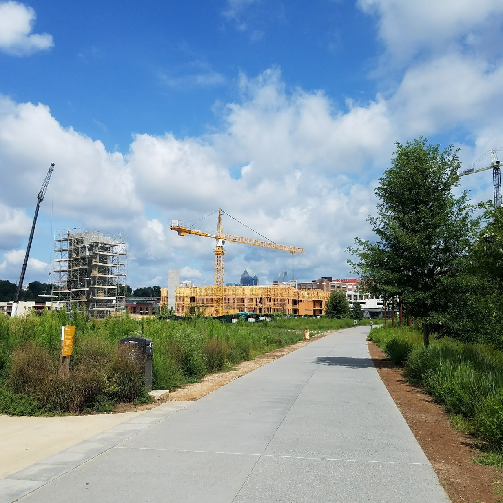

Using R to gather bicycle infrastructure data from OpenStreetMap (part 1)
Michael D. Garber, PhD MPH
Revised November 18, 2022
Part 1 url: https://michaeldgarber.github.io/teach-r/osmdata-for-bikes-part-1
Part 2 url: https://michaeldgarber.github.io/teach-r/osmdata-for-bikes-part-2
1 Introduction
An important element of research on the health effects of the built environment is accurate and accessible data on the built environment. Traditionally, spatial data on bicycle lanes and paths have been difficult to collect. In-person audits of the built environment are time-consuming to conduct at scale, even if done virtually. And identifying the appropriate contact with access to local digital files, perhaps someone in city government, is not always feasible.
To facilitate access to data, municipalities have begun posting data on transportation infrastructure (i.e., roadways and paths) on publicly available online web portals. For example, the Atlanta Regional Commission has shared a publicly available inventory of bicycle infrastructure for the Atlanta metropolitan area. These online portals have made data access easier, but they nonetheless have limitations for some applications. Not every agency posts data on bicycle infrastructure, making between-city comparisons relying on these portals difficult. In addition, naming conventions may differ between posted datasets. Finally, staffing constraints may mean that data that are not updated regularly.
OpenStreetMap (OSM) is an appealing alternative to agency portals for gathering data on the transportation environment because it is a single source with (mostly) common naming conventions. And because anyone can contribute, the data may be updated more regularly.
The goal of this demo series (part 1 and part 2) is to illustrate use of an R package, osmdata, to download OpenStreetMap data, with a focus on gathering bicycle infrastructure in Atlanta. The present document focuses on the data structure.
2 Outline
- Overview of OpenStreetMap’s data structure
- Overview of OpenStreetMap’s representation of bicycle infrastructure data
- Use of osmdata to download OpenStreetMap data (part 2)
3 Overview of OpenStreetMap and bicycle infrastructure
3.1 OpenStreetMap data structure
As stated on its Wikipedia entry, “OpenStreetMap is a collaborative project to create a free editable map of the world.” The project began in 2004. The map’s main landing page is https://www.openstreetmap.org.
Data underlying OpenStreetMap fall into 3 categories.
- Nodes are points, stored as coordinates, which represent features which do not have a size or shape.
- Ways are features in the shape of a line or polygon, such as streets, rivers, parks, or buildings.
- Relations are used to organize collections of ways and nodes according to a common theme or attribute.
These data elements are characterized by a tagging system of keys and the key’s corresponding value, coded as key=value. For example, the highway key is used to describe attributes of the roads and footpaths. Keys and values are free text, but the mapping community has agreed upon a set of naming conventions.
3.2 OSM data and bicycle infrastructure
3.2.1 Bicycle infrastructure definitions
With the goal of making bicycling more appealing and safer, municipalities across the world have been installing bicycling-specific infrastructure.
- Conventional bike lanes are the most common type of bicycle infrastructure in U.S. cities. They are a paint-demarcated lane designating space for bicyclists to ride parallel to motor-vehicle traffic without a buffer or physical separation.
Edgewood Ave NE. A screenshot from Google Street View. Image capture: March 2020
- Buffered bike lanes include some additional space between the motor-vehicle lane and the bicyclist lane but do not include a physical barrier between the two lanes.
Ralph David Abernathy Blvd SW. Photo by author.
- Protected bike lanes, also called cycle-tracks, use a curb-like barrier, parked cars, or delineator posts to physically separate bicyclists from motorized traffic. Here is one in Atlanta along Luckie St NW with a mix of a curb-like barrier and delineator posts.
Luckie St NW. Photo by author.
- Shared-lane markings, also called sharrows, use pavement markings to indicate a shared-lane environment between bicyclists and motor vehicles. They are often accompanied by comforting signs stating that “bicyclists may use the full lane.”
Clifton Rd. Photo by author.
- Off-street paved trails are physically separated from roadways and are designed for use by bicyclists, pedestrians, or users of other modes of light, individual transit like electric bikes and scooters. Off-street paved trails might not follow the road network. The Atlanta BeltLine Eastside Trail is an off-street paved trail:

Atlanta Beltline Eastside Trail, circa 2017. Photo by author.
3.2.2 How OSM characterizes bicycle infrastructure and paths
Broadly, bicycle infrastructure in OSM are ways of key highway. As described by Ferster & colleagues (2020), bicycle infrastructure may either be
- part of an existing way (e.g., a conventional bike lane along a roadway), or
- it can be its own separate way (e.g., an off-street trail).
For on-street bike infrastructure, the highway value will typically correspond to the roadway type itself (e.g., highway=secondary for a secondary roadway), and there may be a separate cycleway key, which could take a range of possible values (e.g., cycleway=lane for a conventional bike lane or cycleway=shared for a sharrow). Here is an example of a conventional bike lane (Edgewood Ave):
Roadway types where bicycle infrastructure might be found include highway=:
- primary: a minor arterial in US Highway Functional Class parlance. These are often state-run roadways, such as Ponce de Leon Ave NE in Atlanta.
- secondary: a major collector, such as 10th St NE in Atlanta.
- tertiary: a minor collector. An example in Atlanta is McLendon Ave NE.
- residential: also referred to as a local road. These roads primarily serve as access to housing.
If the bike infrastructure is a stand-alone feature, like a paved trail, then the highway value may any of the following:
highway=pathis the generic highway type for paths intended for non-motorized vehicles. A path could be paved or unpaved. Here is an unpaved path that I proudly mapped.
highway=cyclewayis used to specify that the path is intended for bicyclists. Objects with this tag are typically off-street paved trails but, as I note below, might also refer to on-road bike infrastructure. This segment of the Atlanta Beltline Trail is classified as a cycleway:
highway=footwayis a more specific version ofpath. A footway might be a walking path in a park, for example:

Some other tags that can help to classify the type of infrastructure:
surface=pavedcan be helpful for finding off-street paved trails among objects withhighway=path.bicycle=designatedis used to indicate that bicycling is explicitly intended. This tag is implied ifhighway=cyclewayso is usually applied where the highway is a roadway.cycleway:right=laneor similar variations can be used to further specify the type of conventional bike lane, like what side of the street the lane is on. This tag is used for a stretch of Clifton Rd across from CDC:
bicycle=nomay apply on certain roadways or paths where cycling is explicitly not allowed.
Some example combinations of these tags are summarized in this table.
These examples are not exhaustive.
It’s also worth noting that protected bike lanes and off-street paved trails are frequently both coded as highway=cycleway. Sometimes, additional tags are available to differentiate between the two even if they are coded as the same highway type.
For example, both the Luckie St protected bike lane and the Stone Mountain Trail (an off-street paved trail) in Freedom Park are classified as cycleways. The non-empty lanes attribute is a clue suggesting the Luckie St lane (called PATH Parkway here) is a protected bike lane. And the Stone Mountain Trail through Freedom Park explicitly says motor vehicles are not permitted (motor_vehicle=no), suggesting it’s not part of a roadway.

These clues are not always available, however. To correctly classify the infrastructure, it may be necessary to check with personal knowledge, other data sources, or a Google Street View virtual audit.
That concludes this part. In part 2, we’ll dive into the R code.
Copyright © 2022 Michael D. Garber